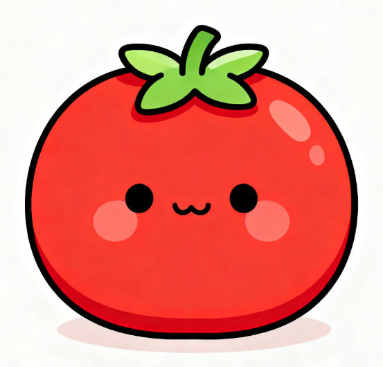

超甜西红柿
📜
🎨
⚙

25:00
开始专注
清零
戳我一下试试～
今日已完成 0 个番茄
编辑人设
人设会缓存在浏览器中，但偶尔也可能消失，所以请做好备份哦
您还可以输入 1500 字
更换头像
事先裁剪成正方形，效果更好哦
头像：
选择图片
恢复默认头像
自定义番茄时间
专注时长（分钟）：
保存
关闭
外观设置
页面背景：
碧海蓝天
浆果梅子
清新薄荷
纯白背景
自定义图片
窗口颜色：
100%
主题字体色：
保存
关闭
历史番茄记录
清空
复制当天
复制全部
关闭